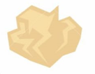
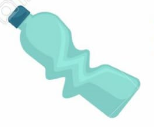

BIENVENIDOS A A'RECICLAR
A'Reciclar es un proyecto que está en constante desarrollo y trabaja en pro del gremio del reciclaje con el fin de ayudar a solucionar la problemática de sus recorridos en vano por lugares en los cuales no hay elementos reciclables.
Reciclar no es solo una acción, es la preservación del mundo y sus recursos
Orgánicos
Cartón y Papel
Misión
Nuestra misión es fomentar y promover el reciclaje en la ciudad de Envigado, brindando a los ciudadanos una forma conveniente y accesible de participar en la protección del medio ambiente. A través de nuestra aplicación, conectamos a los ciudadanos con recicladores a domicilio, facilitando la recolección y el transporte eficiente de materiales reciclables a los puntos de reciclaje adecuados. Buscamos crear conciencia sobre la importancia del reciclaje y contribuir a la construcción de una ciudad más sostenible y limpia.
Visión
Nuestra visión es ser la plataforma líder en la ciudad de Envigado para fomentar el reciclaje, estableciendo un sistema eficiente y confiable que involucre a todos los ciudadanos en la tarea de cuidar y preservar el medio ambiente. Queremos convertirnos en el referente tecnológico para la gestión del reciclaje, mejorando constantemente nuestra aplicación y expandiendo nuestros servicios a otras ciudades y regiones. Aspiramos a un futuro en el que el reciclaje sea una práctica cotidiana y arraigada en la sociedad.
Valores
- Sostenibilidad: Nos comprometemos a promover la sostenibilidad ambiental a través del reciclaje, reduciendo la generación de residuos y contribuyendo a la conservación de los recursos naturales.
- Accesibilidad: Buscamos hacer del reciclaje una actividad accesible para todos los ciudadanos, proporcionando una plataforma intuitiva y fácil de usar que facilite la participación y la colaboración de la comunidad.
- Confianza: Valoramos la confianza de nuestros usuarios y nos esforzamos por establecer relaciones sólidas y transparentes con nuestros recicladores y socios, garantizando un servicio confiable y de calidad.
- Responsabilidad social: Reconocemos nuestra responsabilidad como empresa para con la comunidad y nos comprometemos a utilizar nuestros recursos y capacidades para generar un impacto positivo en la sociedad y el medio ambiente.
- Innovación: Promovemos la innovación constante en nuestra aplicación y enfoques empresariales, buscando soluciones creativas y tecnológicas para abordar los desafíos ambientales y mejorar continuamente la experiencia del usuario.
- Colaboración: Fomentamos la colaboración entre los ciudadanos, recicladores y otros actores involucrados en el proceso de reciclaje, trabajando juntos para crear una red sólida y eficiente que maximice los resultados positivos en términos de reciclaje y sostenibilidad.
Si usas nuestra aplicación, ayudarás a los recicladores de tu región y a ti mismo, con el fin de salvar el planeta.

Orgánicos, Papelera verde

Papel y Cartón, Papelera gris
